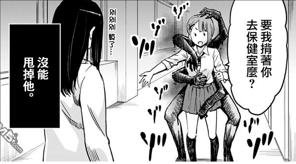

第一章 这个女孩~超可爱
“我是天宫四叶，从今天起会和大家一起学习，请多多关照。”
在讲台九十度鞠躬的，是一个青春靓丽的少女，漆黑的长发如瀑四的垂下，在及腰的长发末梢十厘米的地方又神奇的渐变为银白色，就像是深夜的河水击打的浪花似得，让人印象深刻。
这是秀知院学园二年级的一个班级里的一个小插曲，美少女转学生毫无前兆的空降让一众男生不由的欢呼雀跃，而女生们也对新来的同学保持旺盛的好奇心。
以前的学校是什么、喜欢什么样口红、喜欢什么样的点心、最喜欢的偶像是谁……
一大堆的问题一般会让人头晕眼花非常反感，但是四叶却始终带着微笑一一解答，没有因为同学的热情感到一丝的不耐烦。
“就好像是大小姐一样。”
这是来自同学的评价，少女与所有人都保持着不近不远的距离，既不失礼也不奉迎，落落大方的样子一看就像是受过良好的教育。
“好奇怪的感觉……”
少女见子看着新的同学愣了愣，总有种……很清爽的感觉。
“怎么了？见子？”小華的手在见子的眼前晃了晃，她看了看新同学，然后又看向自己的好友，“你认识天宫同学吗？”
“不，第一次见。”见子摇了摇头收回目光看向自己的朋友，她眼睛顿时睁大，不假思索的站了起来将小華的桌子从她的面前推向一边：“突然……有点头晕……”
“诶？又贫血了吗？”见子的行为并没有引起小華的一丝疑惑，像是早已经习惯了好友的怪异行为一样，又像是单纯的并没有意识到不对的地方。
“嗯，贫血，贫血。”见子面色有些发白的点点头肯定好友的询问，这不是第一次了，同样也不会是最后一次，“小華，我们一起去保健室吧！”见子不由分说的拉着小華离开了位置，她想要离那桌子远点，也想让小華离那桌子原点，一切都因为……只有她能看到的，从桌子里伸出来的弥漫着黑色雾气的手们和脚们。
是鬼？是幽灵？
见子并不知道那算是什么，但是，见子知道自己看家的是所有人都看不见的东西，已经不是第一次了，在很久之前的某一天，她突然就能看到这些东西，最初只是朦胧的若隐若现的影子，到最后越来越清晰，直到能听到‘它们’的声音。
见子不知道被它们直到自己能看见它们的后果是什么，但见子知道，自己不该看见这些东西的，也不能让它们知道自己能看见它们。
不能逃避，无意间的数次与之对视，不断有‘脏东西’询问她【看见了吗】，逃避只会将自己能看见它们事情暴露，更不能去面对，因为她没有能够与之对抗的力量。
不能去逃避，也不能去面对，所以，选择无视它们是见子所知的最优的选择。
这是某一次被吓傻后对【脏东西】的一切言行无法做出任何回应后得出的结论，它们通常不会去纠缠看不见它们的人。
但，也只是通常……
迅速的离开教室并没有使她们拜托从桌子里钻出来的脏东西的纠缠，只有见子能看见，那东西，挂在小華的背后抱着小華，而小華对此，却一无所知。
“要我背着你去保健室吗？”小華见好友停了下来以为她走不动了，关心的说出让见子感觉毛毛的的话语来。
“……不，不用了。”
见子面色灰败的拒绝，然后转身继续向保健室走去，无论有没有甩掉，她们都不能马上回教室，不然可能会引起那东西的疑心，这样的话，就更加甩不掉了。
“奇怪，老师不在诶。”
老师并没有在保健室里待命，这让见子松了口气的同时，也更加的不自然了。
那东西，抱的更紧了！并且还抓在好友的胸上！
真的没有感觉吗？
“算了吧，感觉已经没事了。”见子小心翼翼的说道。
“不行的哦，不能小看贫血哦！”小華一本正经的回绝道，看得出来她非常的关系朋友的身体，“如果放任病情进展，后果不堪设想哦！”
“……嗯。”见子只能点点头，然后看着好友在保健室里翻箱倒柜，与其是在给自己找能用的东西，不如说是在寻宝，一副毫无所觉的样子。
见子只能，不能这么放着不管，不然好友的麻烦就大了！
“啊，是听诊器！”好友如愿的找到了一个看过很多次但是就是没有玩过的玩具，她放在自己宏伟的胸前，“嗯，心脏的声音，有点听不太清，是脂肪在碍事的缘故吗？”说着她的目光移到了自己的身上。
“呐，我给你听听心跳吧？”好友是注视着自己的胸口这样对自己说。
“你是在挑衅吗？”有一瞬间，见子涌现出不管这傻子由它去算了的心情。
“这是……”见子看见桌子上的消毒剂生出了一个想法，“呐，小華，你知道吗？听诊器上其实有超多的很厉害的细菌。”
“诶？是这样吗？！”
“感冒的同学也用过……”
“这么不早说啊！”
一般人都能意识到的吧……
“要消毒吗？”见子拿起一边的消毒酒精一边询问道。
“嗯。”小華对好友的预谋毫无所觉的点了点头。
“手伸过来！”
也不知道用酒精，会不会有效果……
咻咻——
见子用力的在瓶口按下，消毒酒精毫不客气的射在小華的胸前将她的衣服都打湿了。
“等……你在往哪里呲啊！”
“乱动的话会瞄不准的！”
见子趁着小華为了躲避冰凉的消毒酒精而向自己露出背部的时候玩闹似得再度用力按了几下喷剂的瓶口。
一开始见子的目的就是为了把消毒酒精捧在按在小華胸前的那个脏东西的手上，而在脏东西完全暴露在自己面前的时候，见子更不会客气学校的消毒剂。
“你够了！”即使是一个笨蛋，也会为这样故意把自己弄湿的恶作剧而生气，“真是的，都湿漉漉的了……不打算道歉吗？”小華插着板着脸看自己把自己全身弄湿的好友说道。
“对不起！”见子老老实实的道歉道，不过却不是因为把好友的衣服弄湿这种事情，而是以为她看见从好友背后伸出来的脑袋。
酒精，一点效果也没有……
似乎做了多余的事情，抱歉……
“算了，反正消毒锅了，原谅你了！”小華收起自己故作的脸色，笑着回应似乎很内疚的好友。
“听诊器也稍微消消毒，那打起精神来吧，开始检查咯！”
也不知道，到底是为了检查好友的身体状况，好事报复刚刚用消毒酒精把自己弄湿了这就是。
“不……算了……那个……”
“不过是稍微检查一下嘛。”小華兴致勃勃的靠近见子说道，这让见子面色一变，而原因，却不是好友手上的听诊器，而是她背后她所看不见的那东西。
之后打算附到我身上？
“我从下面伸进去了哦。”小華掀起见子的毛衣抓着听诊器伸了进去。
好可怕……可是，既然我对见子做了过分的事情……那就让我来代替小華……
“好厉害，咚咚咚的跳着呢。”
小華发出惊讶的声音，从反应上看，听诊器放在见子的胸前确实比自己的胸前能听的更清楚。
“？”见子惊讶的发现，那脏东西并没有爬到自己的身上来，而是离开了自己，甚至离开了好友小華。
“你们两个玩的挺开心啊！”突如其来的声音吓了两人一跳，“已经开始上课了哦！”
“啊！木户老师！”是保健室的老师回来了。
“我们没有要翘课的意思……”
见子看见刚刚缠在小華身上的脏东西现在缠在了木户老师的身上了，并且双手握着老师因为丰满而些许裸露的胸，色眯眯的看着……
然后，那脏东西突然挣扎了起来，很快的，彻底化为黑气消散了……
“诶？！”
“不要解释了，赶快回教室上课去！”
两人就这样被保健考试从保健室里赶了出来，而同时，她们也看见，新来的同学就在保健室外面，似乎是被木户老师带来的。
是身体不舒服吗？
【不开新书，又没有码字的欲望怎么办？当然是开番外新卷了，从卷名来说……显然，这是主角上辈子的事情，而我说过，主角，上辈子是男的，所以本卷的主角，是男的……所以，你们有看见主角吗？
本卷主题大概是都市灵异，其实也不是什么原创剧情，也是同人，最近看的很喜欢的漫画，见子超可爱】